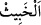
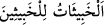
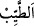
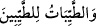

her kap içinde ne varsa onu dışarı verir. İyi sözler iyi erkek ve kadınlara âiddir.
Başkalarından böyle şeyler sâdır olmaz. İyi erkek ve kadınlar da iyi sözler söylemeye
alışıktırlar. Onlardan iyi sözden başkası duyulmaz. İşte bu iyi insanlar, kötü insanların
söylediği kötü sözlerden uzaktırlar. Yâni onların bu gibi kötü şeyleri söylemeleri asla
mümkün değildir. Bu durumda âyetin iniş gayesi, Hz. Âişe’ye yapılan iftirâ hakkında:
“Hâşâ! Bu, çok büyük bir iftirâdır.” diyenleri kötü söz söylemiş olmaktan tenzih
etmektir.
Anlatıldığına göre Hasan b. Ziyad Taberistan taraflarından olup büyüklerden bir zâttı.
Yün elbise giyer, iyiliği emrederdi. Her sene sahâbe çocuklarına dağıtılmak üzere
Bağdad’a yirmi bin dinar gönderirdi. Bir gün yanına Alevî gruplarından bir adam geldi
ve Hz. Âişe (r.anhâ.) hakkında kötü sözler söyledi. Hasan kölesine hemen onun boynunu
vurmasını emretti. Bunun üzerine Alevîler toplanıp onun yanına geldiler. “Bu adam
bizdendir” diyerek bağışlanmasını istediler. Bunun üzerine Hasan b. Ziyad: “Bundan
Allah’a sığınırım. Bu adam Rasûlullah (s.a.)’e hakâret etti. Eğer Hz. Âişe kötü ise onun
eşinin de kötü olması gerekir. Rasûlullah (s.a.) böyle olmaktan münezzehtir. Rasûlullah
(s.a.) güzel ve temizdir, Hz. Âişe de güzel ve gökten inen âyetlerle temizliği ilan
olunmuş tertemiz bir kadındır. Ey oğul! Vur şu kâfirin boynunu!” dedi. Köle de onun
boynunu vurdu.
Mesnevî’de der ki:
Şu yerde ve gökte zerre zerre ne varsa
Hepsi de mıknatıs gibi kendi cinsini çeker
Cehennem ehli olanlar cehennem ehli olanları cezbeder
Nura mensup olanlar da nur ehli olanları ister
Bâtıl üzere olanlar, kendileri gibi bâtıl ehli olanları çekerler
Ehl-i Hak ise ehl-i Hak olandan hoşnud olurlar
Güzellikler ve güzeller iyiler içindir
Bak gör, çirkinlikler de çirkinler içindir
Râgıb şöyle demiştir: “__WORD__, ister hissedilen ister akledilen cinsten olsun, âdîliği
sebebiyle hoş karşılanmayan şeydir. Bu sebeple habîs; bâtıl inançları, yalan sözleri ve
kötü fiilleri ifâde eden bir terimdir. O halde “__WORD__ ifâdesi; iyi ameller ve boş
istek ve düşünceler, âdî insanlara âiddir mânâsına gelir. “__WORD__ hislerin hoşuna giden
şeylerdir. Buna göre “__WORD__ ifâdesi” iyi amellerin iyi kimselerden sâdır
olacağına dikkat çekmektedir. Nitekim bir hadiste: “Mü’min amelinden daha güzel,
kâfir ise amelinden daha kötüdür.”[140] buyrulmuştur.
et-Te’vîlâtü’n-Necmiyye’de der ki: “Âyet dünyanın ve dünyevî şehvetlerin
kötülüğüne, onların azgın nefis sâhibi kötü kimseler için olduğuna işâret etmektedir.
Dünya ehlinden olup onunla tatmin olan kötü kimseler de nefsin lezzetlerinden ve